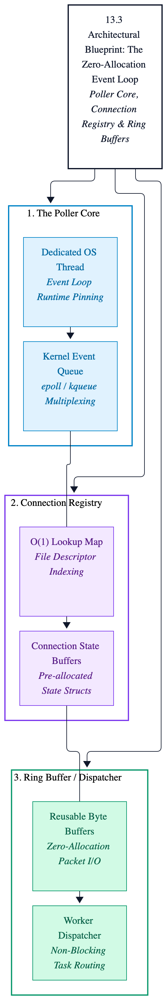
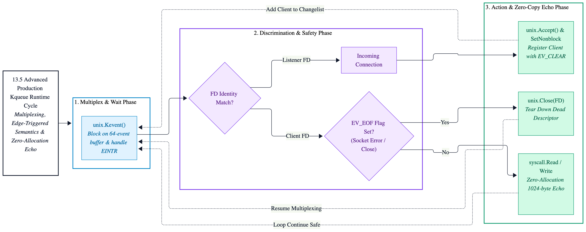

Low-Level Event Loops
Welcome to Chapter 13 of the Go Systems Blueprint. Building upon the runtime internals and kernel sandboxing examined in Chapter 12, ultra-low-latency workloads demand direct operating system event notification primitives and deterministic descriptor lifecycles.
This chapter covers bypassing Go's standard netpoller, comparing Linux epoll and macOS kqueue,
and implementing non-blocking, edge-triggered event loop skeletons via golang.org/x/sys/unix.
13.1 Introduction: Why Bypass Go's Net Poller?
Go's standard library netpoller (internal/poll) converts blocking network operations into goroutine yields.
At extreme connection counts or sub-millisecond tail latencies, bypassing runtime abstractions grants deterministic control
over file descriptors, buffer reuse, and event dispatching.
13.2 Operating System Primitives: Linux vs. macOS
Cross-platform event loops bridge architectural differences between Linux epoll and macOS/BSD kqueue
across system call interfaces, trigger semantics, and descriptor scopes.
| Feature | Linux (epoll) | macOS (kqueue) |
|---|---|---|
| System Call Interface | epoll_create1, epoll_ctl, epoll_wait |
kqueue, kevent |
| Trigger Modes | Level-triggered and Edge-triggered (EPOLLET) |
Event-driven (automatic edge/one-shot via EV_CLEAR) |
| Descriptor Scope | File descriptors only (fd) |
Generic kernel objects (Sockets, VFS, Signals, Timers) |
| Complexity | Explicit control flag state management | Unified filter flags (EVFILT_READ, EVFILT_WRITE) |
13.3 Architectural Blueprint: The Zero-Allocation Event Loop
A production event loop pairs a dedicated poller loop with O(1) descriptor state tracking and reusable I/O buffers to eliminate garbage collector spikes on high-throughput hot paths.
Figure 13.3: Event Loop Architecture

13.4 Production Code: Low-Level Epoll Loop Skeleton (Linux)
The following Linux implementation binds a non-blocking TCP listener, registers edge-triggered read notifications
(EPOLLIN | EPOLLET) with epoll, and services client descriptors using reusable buffers.
//go:build linux
package main
import (
"errors"
"fmt"
"log"
"net"
"syscall"
"golang.org/x/sys/unix"
)
// extractListenerDescriptor retrieves a raw non-blocking file descriptor from a TCP listener.
func extractListenerDescriptor(tcpListener net.Listener) (int, error) {
// Defensively validate that the listener interface is non-nil.
if tcpListener == nil {
return -1, errors.New("error: tcp listener cannot be nil")
}
// Narrow the generic listener interface to a concrete TCP listener.
tcpListenerConcrete, isTcpListener := tcpListener.(*net.TCPListener)
if !isTcpListener || tcpListenerConcrete == nil {
return -1, errors.New("error: expected concrete *net.TCPListener")
}
// Duplicate the underlying socket into an *os.File to inspect its descriptor.
listenerFile, fileError := tcpListenerConcrete.File()
if fileError != nil {
return -1, fmt.Errorf("failed to extract listener file handle: %w", fileError)
}
// Close the duplicated handle once the raw descriptor is extracted.
defer listenerFile.Close()
listenerDescriptor := int(listenerFile.Fd())
// Defensively verify that the extracted file descriptor is valid.
if listenerDescriptor < 0 {
return -1, errors.New("error: invalid listener file descriptor")
}
// Switch the socket into non-blocking mode so accept calls never stall the poller loop.
if nonBlockError := syscall.SetNonblock(listenerDescriptor, true); nonBlockError != nil {
return -1, fmt.Errorf("failed to set listener socket non-blocking: %w", nonBlockError)
}
return listenerDescriptor, nil
}
// handleEpollClientIO drains available bytes from a ready client socket and echoes them back.
func handleEpollClientIO(epollDescriptor int, clientDescriptor int, ioBuffer []byte) error {
// Defensively validate descriptor bounds and buffer capacity.
if epollDescriptor < 0 || clientDescriptor < 0 {
return errors.New("error: invalid epoll or client file descriptor")
}
if len(ioBuffer) == 0 {
return errors.New("error: io buffer cannot be empty")
}
// Drain until EAGAIN/EWOULDBLOCK because edge-triggered epoll will not re-notify unread bytes.
for {
bytesReadCount, readError := syscall.Read(clientDescriptor, ioBuffer)
if readError != nil {
// Stop draining once the kernel socket buffer has no more immediately available data.
if errors.Is(readError, syscall.EAGAIN) || errors.Is(readError, syscall.EWOULDBLOCK) {
return nil
}
// Retry immediately if a signal interrupted the read system call.
if errors.Is(readError, syscall.EINTR) {
continue
}
// Deregister and close the descriptor on unrecoverable read errors.
_ = unix.EpollCtl(epollDescriptor, unix.EPOLL_CTL_DEL, clientDescriptor, nil)
_ = syscall.Close(clientDescriptor)
return fmt.Errorf("failed reading from fd %d: %w", clientDescriptor, readError)
}
// A zero-byte read indicates clean peer shutdown (EOF).
if bytesReadCount == 0 {
_ = unix.EpollCtl(epollDescriptor, unix.EPOLL_CTL_DEL, clientDescriptor, nil)
_ = syscall.Close(clientDescriptor)
return nil
}
totalWritten := 0
// Loop until all read bytes are written or the socket write buffer fills up.
for totalWritten < bytesReadCount {
bytesWritten, writeError := syscall.Write(clientDescriptor, ioBuffer[totalWritten:bytesReadCount])
if writeError != nil {
// Break out if the outbound socket buffer is temporarily full.
if errors.Is(writeError, syscall.EAGAIN) || errors.Is(writeError, syscall.EWOULDBLOCK) {
break
}
// Retry immediately if a signal interrupted the write system call.
if errors.Is(writeError, syscall.EINTR) {
continue
}
// Clean up descriptor registration and close on fatal write errors.
_ = unix.EpollCtl(epollDescriptor, unix.EPOLL_CTL_DEL, clientDescriptor, nil)
_ = syscall.Close(clientDescriptor)
return fmt.Errorf("failed writing to fd %d: %w", clientDescriptor, writeError)
}
totalWritten += bytesWritten
}
}
}
// runLinuxEpollLoop initializes an edge-triggered epoll loop on the supplied listen address.
func runLinuxEpollLoop(listenAddress string) error {
// Defensively validate that the listen address is non-empty.
if listenAddress == "" {
return errors.New("error: listen address cannot be empty")
}
// Bind the TCP listener on the requested interface and port.
tcpListener, bindError := net.Listen("tcp", listenAddress)
if bindError != nil {
return fmt.Errorf("failed to bind tcp listener on %s: %w", listenAddress, bindError)
}
defer tcpListener.Close()
// Obtain a non-blocking raw descriptor for direct kernel polling.
listenerDescriptor, descError := extractListenerDescriptor(tcpListener)
if descError != nil {
return descError
}
// Create an epoll instance with close-on-exec set to prevent descriptor leaks across exec.
epollDescriptor, epollCreateError := unix.EpollCreate1(unix.EPOLL_CLOEXEC)
if epollCreateError != nil {
return fmt.Errorf("failed to create epoll instance: %w", epollCreateError)
}
defer unix.Close(epollDescriptor)
// Register the listening socket for edge-triggered readable events.
listenerEvent := unix.EpollEvent{
Events: unix.EPOLLIN | unix.EPOLLET,
Fd: int32(listenerDescriptor),
}
if epollCtlError := unix.EpollCtl(epollDescriptor, unix.EPOLL_CTL_ADD, listenerDescriptor, &listenerEvent); epollCtlError != nil {
return fmt.Errorf("failed to register listener fd with epoll: %w", epollCtlError)
}
// Preallocate reusable event and I/O buffers to avoid per-iteration heap allocations.
triggeredEvents := make([]unix.EpollEvent, 64)
scratchBuffer := make([]byte, 4096)
for {
eventCount, waitError := unix.EpollWait(epollDescriptor, triggeredEvents, -1)
if waitError != nil {
// Retry cleanly when interrupted by a signal.
if errors.Is(waitError, syscall.EINTR) {
continue
}
return fmt.Errorf("epoll_wait failed: %w", waitError)
}
// Defensively clamp eventCount to the slice capacity before indexing.
if eventCount > len(triggeredEvents) {
eventCount = len(triggeredEvents)
}
for eventIndex := 0; eventIndex < eventCount; eventIndex++ {
activeDescriptor := int(triggeredEvents[eventIndex].Fd)
activeMask := triggeredEvents[eventIndex].Events
// Service incoming connections in a drain loop under edge-triggered mode.
if activeDescriptor == listenerDescriptor {
for {
clientDescriptor, _, acceptError := unix.Accept4(listenerDescriptor, unix.SOCK_NONBLOCK|unix.SOCK_CLOEXEC)
if acceptError != nil {
// Stop accepting once the backlog queue is empty.
if errors.Is(acceptError, syscall.EAGAIN) || errors.Is(acceptError, syscall.EWOULDBLOCK) {
break
}
if errors.Is(acceptError, syscall.EINTR) {
continue
}
log.Printf("accept4 error on listener fd %d: %v", listenerDescriptor, acceptError)
break
}
// Register each accepted client socket for edge-triggered reads and peer hangup alerts.
clientEvent := unix.EpollEvent{
Events: unix.EPOLLIN | unix.EPOLLET | unix.EPOLLRDHUP,
Fd: int32(clientDescriptor),
}
if clientCtlError := unix.EpollCtl(epollDescriptor, unix.EPOLL_CTL_ADD, clientDescriptor, &clientEvent); clientCtlError != nil {
_ = unix.Close(clientDescriptor)
log.Printf("failed to register client fd %d with epoll: %v", clientDescriptor, clientCtlError)
continue
}
}
continue
}
// Close and unregister sockets that encountered an error, hangup, or peer shutdown.
if (activeMask & (unix.EPOLLERR | unix.EPOLLHUP | unix.EPOLLRDHUP)) != 0 {
_ = unix.EpollCtl(epollDescriptor, unix.EPOLL_CTL_DEL, activeDescriptor, nil)
_ = syscall.Close(activeDescriptor)
continue
}
// Process readable data on the active client descriptor.
if ioError := handleEpollClientIO(epollDescriptor, activeDescriptor, scratchBuffer); ioError != nil {
log.Printf("client io warning on fd %d: %v", activeDescriptor, ioError)
}
}
}
}
func main() {
// Start the Linux epoll event loop on port 8080.
if loopError := runLinuxEpollLoop("0.0.0.0:8080"); loopError != nil {
log.Fatalf("epoll event loop exited with error: %v", loopError)
}
}13.5 Production Code: Low-Level Kqueue Loop Skeleton (macOS)
On macOS and BSD kernels, kqueue uses a single kevent call to submit changelist updates
and poll ready descriptors using EV_CLEAR for one-shot edge-like event consumption.
//go:build darwin
package main
import (
"errors"
"fmt"
"log"
"net"
"syscall"
"golang.org/x/sys/unix"
)
// extractDarwinListenerDescriptor obtains a non-blocking raw socket descriptor on macOS.
func extractDarwinListenerDescriptor(tcpListener net.Listener) (int, error) {
// Defensively validate that the listener interface is non-nil.
if tcpListener == nil {
return -1, errors.New("error: tcp listener cannot be nil")
}
// Narrow the generic net.Listener interface to a concrete TCPListener.
tcpListenerConcrete, isTcpListener := tcpListener.(*net.TCPListener)
if !isTcpListener || tcpListenerConcrete == nil {
return -1, errors.New("error: expected concrete *net.TCPListener")
}
// Duplicate the underlying socket descriptor into an *os.File handle.
listenerFile, fileError := tcpListenerConcrete.File()
if fileError != nil {
return -1, fmt.Errorf("failed to extract listener file handle: %w", fileError)
}
// Ensure the duplicated file handle is closed after extracting the descriptor.
defer listenerFile.Close()
listenerDescriptor := int(listenerFile.Fd())
// Defensively verify that the extracted file descriptor is valid.
if listenerDescriptor < 0 {
return -1, errors.New("error: invalid listener file descriptor")
}
// Enable non-blocking mode so accept calls never block the event loop thread.
if nonBlockError := syscall.SetNonblock(listenerDescriptor, true); nonBlockError != nil {
return -1, fmt.Errorf("failed to set listener socket non-blocking: %w", nonBlockError)
}
return listenerDescriptor, nil
}
// handleKqueueClientIO reads from a non-blocking client descriptor and echoes bytes back.
func handleKqueueClientIO(clientDescriptor int, ioBuffer []byte) error {
// Defensively validate client descriptor and I/O buffer slice.
if clientDescriptor < 0 {
return errors.New("error: invalid client file descriptor")
}
if len(ioBuffer) == 0 {
return errors.New("error: io buffer cannot be empty")
}
// Drain all currently buffered bytes from the socket until EAGAIN or EWOULDBLOCK occurs.
for {
bytesReadCount, readError := syscall.Read(clientDescriptor, ioBuffer)
if readError != nil {
// Return cleanly once no additional bytes can be read without blocking.
if errors.Is(readError, syscall.EAGAIN) || errors.Is(readError, syscall.EWOULDBLOCK) {
return nil
}
// Retry immediately if a signal interrupted the read system call.
if errors.Is(readError, syscall.EINTR) {
continue
}
// Close the descriptor and report the failure on unrecoverable read errors.
_ = unix.Close(clientDescriptor)
return fmt.Errorf("failed reading from fd %d: %w", clientDescriptor, readError)
}
// A zero-byte read signals that the remote peer closed its write side (EOF).
if bytesReadCount == 0 {
_ = unix.Close(clientDescriptor)
return nil
}
totalWritten := 0
// Write the full read payload back to the socket, handling partial writes and retries.
for totalWritten < bytesReadCount {
bytesWritten, writeError := syscall.Write(clientDescriptor, ioBuffer[totalWritten:bytesReadCount])
if writeError != nil {
// Stop attempting immediate writes if the kernel send buffer is full.
if errors.Is(writeError, syscall.EAGAIN) || errors.Is(writeError, syscall.EWOULDBLOCK) {
break
}
// Retry immediately if a signal interrupted the write system call.
if errors.Is(writeError, syscall.EINTR) {
continue
}
// Close the descriptor and return an error on fatal write failures.
_ = unix.Close(clientDescriptor)
return fmt.Errorf("failed writing to fd %d: %w", clientDescriptor, writeError)
}
totalWritten += bytesWritten
}
}
}
// runDarwinKqueueLoop initializes a kqueue event loop on macOS using EV_CLEAR read filters.
func runDarwinKqueueLoop(listenAddress string) error {
// Defensively validate that the listen address is non-empty.
if listenAddress == "" {
return errors.New("error: listen address cannot be empty")
}
// Bind the TCP listener socket on the specified address.
tcpListener, bindError := net.Listen("tcp", listenAddress)
if bindError != nil {
return fmt.Errorf("failed to bind tcp listener on %s: %w", listenAddress, bindError)
}
defer tcpListener.Close()
// Extract a non-blocking descriptor for direct kqueue registration.
listenerDescriptor, descError := extractDarwinListenerDescriptor(tcpListener)
if descError != nil {
return descError
}
// Allocate a new kernel kqueue event queue descriptor.
kqueueDescriptor, kqueueCreateError := unix.Kqueue()
if kqueueCreateError != nil {
return fmt.Errorf("failed to create kqueue instance: %w", kqueueCreateError)
}
defer unix.Close(kqueueDescriptor)
// Register read interest on the listening socket descriptor.
initialChanges := []unix.Kevent_t{
{
Ident: uint64(listenerDescriptor),
Filter: unix.EVFILT_READ,
Flags: unix.EV_ADD | unix.EV_ENABLE,
},
}
// Submit the initial registration change list to kqueue.
if _, setupError := unix.Kevent(kqueueDescriptor, initialChanges, nil, nil); setupError != nil {
return fmt.Errorf("failed to register listener with kqueue: %w", setupError)
}
// Reuse preallocated slices to avoid heap allocations inside the hot polling loop.
triggeredEvents := make([]unix.Kevent_t, 64)
emptyChanges := []unix.Kevent_t{}
scratchBuffer := make([]byte, 4096)
for {
// Wait indefinitely for kernel readiness events on registered descriptors.
eventCount, waitError := unix.Kevent(kqueueDescriptor, emptyChanges, triggeredEvents, nil)
if waitError != nil {
// Retry cleanly when interrupted by a signal.
if errors.Is(waitError, syscall.EINTR) {
continue
}
return fmt.Errorf("kevent wait failed: %w", waitError)
}
// Defensively clamp eventCount to the allocated event slice length.
if eventCount > len(triggeredEvents) {
eventCount = len(triggeredEvents)
}
for eventIdx := 0; eventIdx < eventCount; eventIdx++ {
activeEvent := triggeredEvents[eventIdx]
activeDescriptor := int(activeEvent.Ident)
// Close the descriptor immediately when kqueue reports an EOF condition.
if (activeEvent.Flags & unix.EV_EOF) != 0 {
_ = unix.Close(activeDescriptor)
continue
}
// Accept all queued incoming connections when the listener descriptor becomes readable.
if activeDescriptor == listenerDescriptor {
for {
clientDescriptor, _, acceptError := unix.Accept(listenerDescriptor)
if acceptError != nil {
// Stop draining once no more pending connections remain in the queue.
if errors.Is(acceptError, syscall.EAGAIN) || errors.Is(acceptError, syscall.EWOULDBLOCK) {
break
}
// Retry immediately if accept was interrupted by a signal.
if errors.Is(acceptError, syscall.EINTR) {
continue
}
log.Printf("accept error on listener fd %d: %v", listenerDescriptor, acceptError)
break
}
// Configure each newly accepted client socket as non-blocking before polling.
if nonBlockError := syscall.SetNonblock(clientDescriptor, true); nonBlockError != nil {
_ = unix.Close(clientDescriptor)
log.Printf("failed to set client fd %d non-blocking: %v", clientDescriptor, nonBlockError)
continue
}
// Register read events with EV_CLEAR so kqueue clears event state once consumed.
clientChanges := []unix.Kevent_t{
{
Ident: uint64(clientDescriptor),
Filter: unix.EVFILT_READ,
Flags: unix.EV_ADD | unix.EV_ENABLE | unix.EV_CLEAR,
},
}
if _, addClientError := unix.Kevent(kqueueDescriptor, clientChanges, nil, nil); addClientError != nil {
_ = unix.Close(clientDescriptor)
log.Printf("failed to register client fd %d with kqueue: %v", clientDescriptor, addClientError)
continue
}
}
continue
}
// Service readable data on an active client socket descriptor.
if ioError := handleKqueueClientIO(activeDescriptor, scratchBuffer); ioError != nil {
log.Printf("client io warning on fd %d: %v", activeDescriptor, ioError)
}
}
}
}
func main() {
// Start the macOS kqueue event loop listening on port 8080.
if loopError := runDarwinKqueueLoop("0.0.0.0:8080"); loopError != nil {
log.Fatalf("kqueue event loop exited with error: %v", loopError)
}
}Figure 13.5: macOS 13.5 Kqueue Loop Architecture

Key Takeaways
- Kernel Multiplexing Control: Bypassing Go's netpoller grants fine-grained control over descriptor states, buffer lifecycles, and synchronization overhead in ultra-low-latency environments.
-
Linux Epoll Mechanics: Combines
epoll_create1,epoll_ctl, andepoll_waitwith Edge-Triggered (EPOLLET) semantics for high-performance notification dispatch. -
macOS Kqueue Mechanics: Utilizes unified
keventchangelist and eventlist buffers to manage both subscriptions and event notifications across generic kernel objects. - Zero-Allocation Discipline: Reusing event slices and byte buffers prevents garbage collection spikes on high-throughput network hot paths.